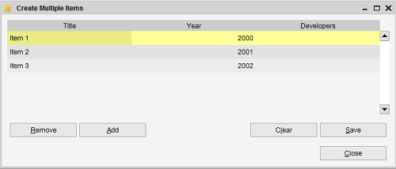

This overview is used to quickly create new items. Some tools exactly use this overview to store the results
of an import (for example). Items shown in this overview are not yet saved.
Additionally you can quickly add new items from here yourself.

The table
The table is where the items are shown and where you can edit them.
Editing a value in the table is straightforward. Click on the cell and you can either enter text (for text fields),
enter a number (for numeric fields) or select a value from the list. With text fields you can also switch to the
edit mode by pressing F2. Once satisfied make sure to save the items you have edited by pressing the "Save" button.